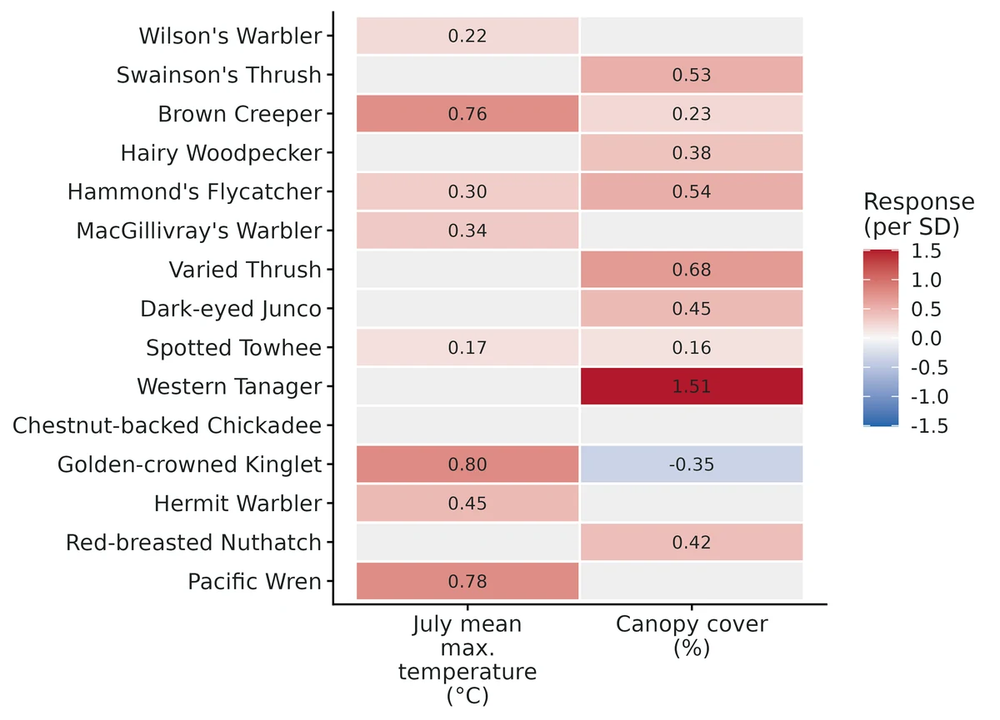
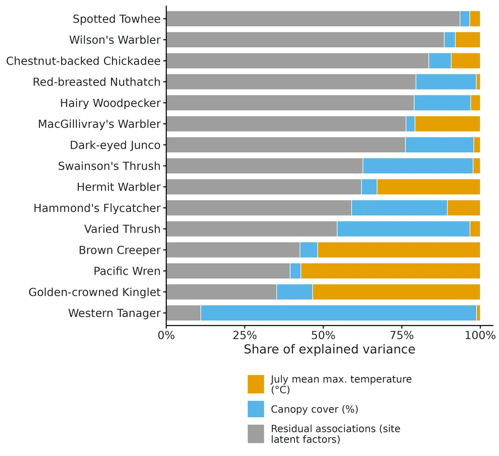
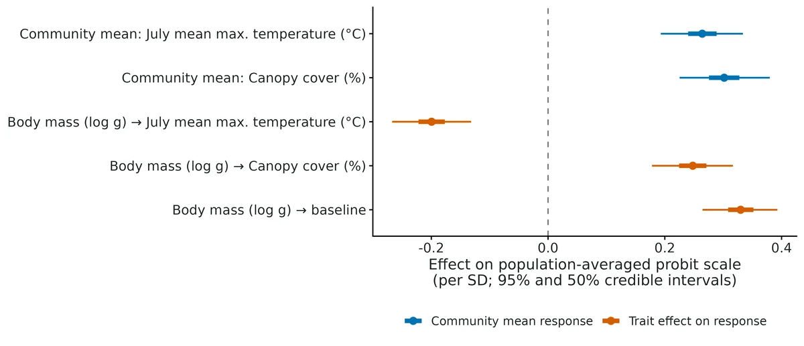
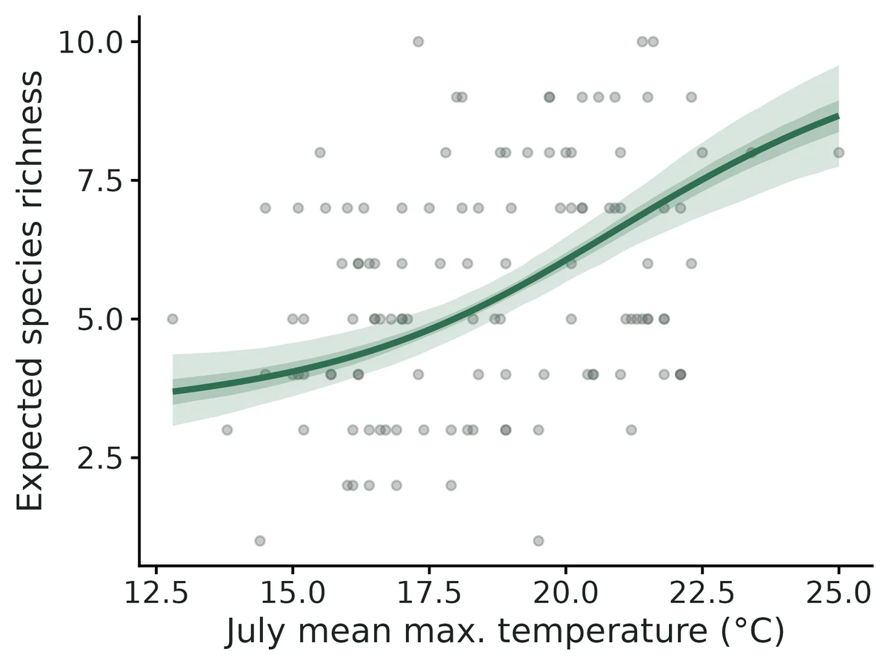

Joint species distribution model (HMSC)
How do the species of a community respond to environmental gradients, do species traits explain those responses, which species co-occur more (or less) often than their shared environment predicts, and how does expected species richness change along the gradients?
Is this the right analysis?
Use it when
Presence/absence or counts of many species (about 5-60) recorded at the same sampling units (plots, point-count stations, traps, lakes), when the question is how species respond to environmental covariates, whether species traits (and phylogeny/taxonomy) explain which species respond how, which species co-occur more or less often than the environment predicts (residual associations), how much of each species' variation is due to each covariate (variance partitioning), or how expected species richness changes along a gradient.
Not for
Imperfect detection that matters for the question (use occu-spatial msPGOcc / sfMsPGOcc, which separates occupancy from detection); one species (glm, occu-single); pairwise interaction hypotheses between two named species (occu-rota, occu-waddle, abund-interactions); ordination / dissimilarity questions (community); cover, biomass or proportion data; inferring biotic interactions from co-occurrence (not possible with any JSDM; see Pitfalls).
The data you need
Community records (long: site, species, value; or wide: site x species), a sites table with covariates (optionally x/y coordinates), optional species traits table (and optional taxonomy columns or a Newick phylogeny).
What the example's main data file looks like:
| station | visit | date | species | count |
|---|---|---|---|---|
| CAS-001 | 1 | 2025-05-22 | Setophaga occidentalis | 1 |
| CAS-001 | 1 | 2025-05-22 | Troglodytes pacificus | 1 |
| CAS-001 | 1 | 2025-05-22 | Certhia americana | 1 |
| CAS-001 | 1 | 2025-05-22 | Ixoreus naevius | 2 |
| CAS-001 | 1 | 2025-05-22 | Piranga ludoviciana | 2 |
Not sure? Use the finder to compare modules.
The worked example
Joint species distribution model (HMSC): forest breeding birds along temperature and canopy gradients (simulated)
The question: How do 15 forest bird species respond to July temperature and canopy cover, does body size explain which species respond how, and which species co-occur more or less often than the habitat predicts?
The data are simulated, so the true answer is known and the analysis can be checked against it.
What the researcher typed
I have bird point-count data in this folder: bird_detections.csv (every detection, 3 visits per station), stations.csv (coordinates, July temperature, canopy cover) and bird_traits.csv (body mass and family for each species). How does each species respond to July temperature and canopy cover? Does body size explain who responds how? Which species occur together more or less than the habitat predicts? Please give me a report with figures I can put in a paper.
Run it yourself
Download the example data below and unzip it.
Open the unzipped folder in Claude Code (see Install).
Paste the prompt above. The agent checks the files, writes a plan, runs planted truth, fits the model and writes the report. You can compare your results with the ones below.
Contains bird_detections.csv, stations.csv, bird_traits.csv, the settings file (config.yaml), a description of the data and a step-by-step walkthrough.
Study design details
| n sites | 120 |
|---|---|
| n species | 15 |
| n visits | 3 |
| n covariates | 2 |
| covariates | july_temp_c, canopy_cover_pct |
| covariate correlation | -0.27 |
| n traits | 1 |
| trait | log(body_mass_g) |
| n latent factors true | 2 |
| response | presence (probit) |
| taxonomy | order/family |
| detection per visit true | 0.7 |
Results from the example data

What this means
- July mean max. temperature (°C): 8 of 15 species respond positively and 0 negatively with at least 95% posterior support. The average response across these species is 0.26 per 1 SD (2.47 °C) on the population-averaged probit scale (95% CrI 0.19 to 0.33); for a species with average occurrence probability (0.35) that is a change to 0.45 (0.43 to 0.48) per SD.
- Canopy cover (%): 9 of 15 species respond positively and 1 negatively with at least 95% posterior support; average response 0.30 per 1 SD (23 percentage points) (95% CrI 0.23 to 0.38).
- The pool-level community means (Gamma) are 0.37 (95% CrI -0.06 to 0.78) for temperature and 0.43 (-0.06 to 0.88) for canopy: neither excludes zero, so a new species from the same pool could respond either way.
- Expected species richness is 4.2 (95% CrI 3.7-4.7) at 15.5 °C and 7.1 (6.6-7.7) at 21.8 °C (10th and 90th percentiles of sites); 3.8 (3.3-4.3) at 31% canopy and 7.2 (6.7-7.7) at 90%. These are associations, not causal effects.
- Larger species have higher baseline prevalence (0.33, 95% CrI 0.26 to 0.39; Gamma 0.50, 0.12 to 0.88) and more positive responses to canopy (0.25, 0.18 to 0.32; Gamma 0.39, 0.06 to 0.75); their more negative response to temperature (-0.20, -0.27 to -0.13) is not supported for the wider pool (Gamma -0.26, -0.55 to 0.04).
- Variance partitioning: July temperature 17%, canopy cover 20%, residual associations (latent site factors) 63%.
- Of 105 species pairs, 39 co-occur more and 37 less often than expected from the covariates (>= 95% support); strongest Hairy Woodpecker & Spotted Towhee (r = -0.71, 95% CrI -0.86 to -0.51). Residual correlations are not evidence of biotic interactions.
- All responses describe where species were recorded, not true occurrence: HMSC assumes detection is perfect or constant within a species.
More figures



Figures are the module's default publication figures, reduced for the web. The report also saves them as PDF and full-resolution PNG.
Planted truth at the example's design
Before trusting the example's results, the module was run on many simulated data sets with the same design and known true values. Each row is one quantity: did the method get it back? (What the thresholds are.)
What OPEN means here. The module works (it passes at its default design), but at this example's design not every quantity passed the planted-truth check, so CascadiaTools does not certify those. 12 of the 17 quantities checked passed outright. For trait log body mass on intercept, trait log body mass on temperature, latcor * (class: 105 rows), beta * (class: 45 rows) and others, the estimate was biased (by up to 44%); don't interpret those at this design. The quantities that passed can be used as reported. With your own data, the report would say the same and suggest what would help: more data, a simpler model or a different estimator. More on DONE and OPEN.
Why, for this example:
OPEN, narrowly. Planted truth at this design (nsim 100, 98 converged): 153 of 156 interpreted rows pass the gate. All population-averaged responses (30/30), community averages (2/2), trait effects (3/3), prevalences (15/15) and richness (1/1) pass, but 3 of 105 latent residual-correlation rows fail, all for pairs whose true correlation is near zero (|r| < 0.05): two on coverage (0.878 vs threshold 0.884) and one on bias (+0.040, 3.2 MC SE). The gate requires every interpreted estimand to pass, and thresholds are not widened. The real-data fit converged (R-hat 1.004, ESS >= 1300) and passed the posterior predictive check. Treat individual weak residual associations as less reliable than their intervals suggest. Responses, trait effects and richness can be reported.
| This example | 120 point-count stations, 15 bird species, 3 visits, 2 covariates, 1 trait (presence/absence) |
|---|---|
| Design the module was validated at | 100 sites, 12 species, 2 covariates, 1 trait, 2 latent factors (presence/absence, probit) |
The example has slightly more sites (120 vs 100) and species (15 vs 12) than the validated default, so it is at least as informative. At the default, every interpreted quantity (population-averaged species responses, community averages, residual correlations, prevalences, richness) passed, while Hmsc's own conditional-scale community effects were inflated by 12-22%; that inflation shrank to about 10% at 200 sites. Detection is not modelled, and the example's 3 visits with 0.7 detection per visit were not part of the validated design.
These calls sit close to the pass/fail line. With another 98 simulated data sets they could come out the other way, so read them as “about at the limit” rather than as a clear pass or fail. Where the allowance is set by the noise floor, a quantity with a small true value can pass with a larger percentage bias than a quantity that fails. PASS there means the bias could not be told apart from simulation noise, not that the quantity is estimated better.
- comm_mean_temperature (✓ PASS): bias +8.8% against an allowance of ±10.0% (set by the 10% rule), so it used 88% of the allowance.
- trait_log_body_mass_on_intercept (✗ FAIL): bias +15.7% against an allowance of ±15.8% (set by the simulation-noise floor (3 Monte Carlo SE)), so it used 100% of the allowance.
12 of 17 rows pass; 2 are borderline.
Show the full recovery table (17 rows)
| Quantity | True value | Average estimate | Bias | Allowed bias | Coverage (needed) | Result |
|---|---|---|---|---|---|---|
| comm_mean_forest | 0.4 | 0.438 | +9.4% | ±11.8%† | 0.96 (0.884) | ✓ PASS |
| comm_mean_intercept | -0.4 | -0.439 | -9.7% | ±12.2%† | 0.96 (0.884) | ✓ PASS |
| comm_mean_temperature | 0.5 | 0.544 | +8.8% | ±10.0% | 0.96 (0.884) | ✓ PASS ≈ borderline |
| comm_popavg_forest | 0.301 | 0.3 | -0.4% | ±10.0% | 0.95 (0.884) | ✓ PASS |
| comm_popavg_temperature | 0.373 | 0.378 | +1.3% | ±10.0% | 0.92 (0.884) | ✓ PASS |
| popavg_trait_log_body_mass_on_forest | 0.22 | 0.224 | +1.7% | ±10.0% | 0.95 (0.884) | ✓ PASS |
| popavg_trait_log_body_mass_on_intercept | 0.264 | 0.276 | +4.5% | ±10.0% | 0.97 (0.884) | ✓ PASS |
| popavg_trait_log_body_mass_on_temperature | -0.356 | -0.362 | -1.8% | ±10.0% | 0.97 (0.884) | ✓ PASS |
| richness_mean_env | 5.93 | 5.93 | -0.0% | ±10.0% | 0.96 (0.884) | ✓ PASS |
| trait_log_body_mass_on_forest | 0.3 | 0.321 | +7.1% | ±17.1%† | 0.95 (0.884) | ✓ PASS |
| trait_log_body_mass_on_intercept | 0.35 | 0.405 | +15.7% | ±15.8%† | 0.94 (0.884) | ✗ FAIL ≈ borderline |
| trait_log_body_mass_on_temperature | -0.45 | -0.531 | -18.0% | ±11.8%† | 0.95 (0.884) | ✗ FAIL |
| popavg_* (class: 30 rows) | – | – | +20.0% | – | 0.94 | ✓ PASS |
| latcor_* (class: 105 rows) | – | – | +32.0% | – | 0.95 | ✗ FAIL |
| prev_* (class: 15 rows) | – | – | +1.5% | – | 0.95 | ✓ PASS |
| beta_* (class: 45 rows) | – | – | +44.0% | – | 0.95 | ✗ FAIL |
| rescor_* (class: 105 rows) | – | – | +20.4% | – | 0.76 | ✗ FAIL |
Limits that matter
- Gate OPEN for weak residual associations: in planted-truth recovery at this design, 3 of 105 near-zero latent residual correlations failed the gate (coverage 0.878, threshold 0.884; or bias +0.04). Do not interpret individual weak pair associations; strong supported pairs had the correct sign 99.8% of the time.
- Detection is not modelled: estimates describe where species were recorded. 2% of occupied station x species cells were never detected, which put true richness (5.65) just above its interval (4.94-5.62); expected recorded richness (about 5.50) is inside.
- Residual associations are not interactions; omitting one important covariate produced spurious supported associations in 57% of pairs in simulation, and 63% of explained variance here sits in the latent factors.
- Strong residual correlations are shrunk toward zero (slope of estimate on truth 0.81 in this fit; 0.85 in the default recovery).
- Pool-level Gamma has low power with 15 species and is inflated by 10-25% on Hmsc's conditional scale; effect sizes are reported on the population-averaged scale.
- The taxonomic tree (rho) has no recovery validation; here rho = 0.31 (95% CrI 0.00-0.96) is uninformative, and the recovery simulations had no tree.
- In-sample Tjur R2 (0.46) and AUC (0.96) include the latent factors and are optimistic; no cross-validation is implemented.
All known limits from the module's validation record
- Counts (lognormal Poisson) are not validated (OPEN). Species-level estimates do not converge in feasible run lengths (section 5). Community-level Gamma looks unbiased, but the module cannot certify count fits. For count data either (a) analyse presence/absence (
response: presence), or (b) run with thin >= 500 and transient >= 100000 and do not interpret anything until the report's R-hat and ESS targets are met. The report prints a CAUTION paragraph whenever they are not. - Hmsc's Beta and Gamma (probit) are inflated by 10-25% at 100 sites with residual associations (default: Gamma +12% to +22%, Beta slope 1.09; less with more sites: +10% at 200 sites). Their coverage is nominal and their false-positive rate correct, so they are fine for "is there an effect". Report effect sizes on the population-averaged scale (
popavg_*,comm_popavg_*,popavg_trait_*), which pass the gate. A Gamma "effect size" quoted from a published HMSC analysis is on the conditional scale and is not comparable. - Hmsc-style
rescor_*(cov2cor(Omega)) under-cover (0.73 at the default design) and are reported only for comparability with the literature. Uselatcor_*. - Strong residual correlations are shrunk toward 0 by about 15% (slope 0.85 at the default design; 0.72 with 20 species and many rare ones; 30 of 66 pairs fail the bias gate with a fixed community). Detection of pairs with |r| > 0.3: 71% at 12 species/100 sites, 47% with many rare species.
- Residual associations are not interactions. Omitting one important covariate produced supported spurious "associations" in 57% of species pairs (section 6). The module cannot tell missing covariates, shared dispersal or sampling artefacts from interactions (Blanchet et al. 2020).
- Gamma is a hyperparameter for the species pool. With 12 species its power is low and does not grow with sites (section 8). With a fixed set of species, Gamma's posterior centres on the realised trait regression, not on the generating value (section 3).
- Not validated: spatial random levels (NNGP/Full), phylogenetic rho recovery, more than 2 covariates/1 trait, and Hmsc's default factor prior. These are implemented (
spatial: nngp,phylogeny/taxonomy) and ran on the example (rho 0.31, CrI 0.00-0.96, i.e. uninformative), but they have no recovery runs. Treat them as unvalidated. - In-sample Tjur R2/AUC include the latent factors and are optimistic. No cross-validation is implemented.
- Detection is assumed perfect or constant per species; HMSC does not separate occupancy from detection.
How this module was validated
- 100 simulated communities per design, fitted with Hmsc (3 chains x 250 samples, thin 80, 20,000 transient iterations); a replicate counted as converged when R-hat (a chain-agreement check) was below 1.05.
- Default design PASSED for all 108 interpreted rows with 100/100 converged; Hmsc's conditional-scale Beta and Gamma failed on bias (+12% to +22%) and are reported but not interpreted.
- Harder design with 20 species, many rare (median prevalence 0.09): 269/271 interpreted rows passed. Count data (lognormal Poisson) failed: 0/100 converged, so counts are not validated.
- Negative control: leaving forest out of the model produced spurious supported associations in 57% of species pairs and failed the gate as it should. False-positive rates: 0.040 and 0.051 for community effects set to zero, and 0.1% of species pairs when no true associations existed.
- Cross-check against an independent glmmTMB model on 16 datasets: population-averaged responses agreed (r = 0.986) and residual correlations agreed (r = 0.918).
- Power over 50, 100 and 200 sites: power for pool-level community effects barely changed with sites because it is limited by the number of species.
- A separate verifier agent used its own simulator (150 sites, 10 species, 3 covariates) and passed all interpreted classes, reproduced the builder's runs, and fixed the trait-effect wording; verdict: verified with limits.
Every run uses the acceptance gate described on the validation page. The full record follows, section by section, exactly as kept in the module's VALIDATION.md.
Settings and pass/fail rule used for every run
All recovery runs: bin/Rscript core/run.R recover jsdm [--config dev/jsdm/configs/<cfg>.yaml] --nsim 100 --cores 16 (configs in dev/jsdm/configs/, outputs in results/jsdm/<run>/), 2026-10-19/20, R 4.5.3, Hmsc 3.3.7. Recovery uses fast_settings: 3 chains x 250 samples, thin 80, transient 20000, max 5 latent factors, factor prior a1 = 2, a2 = 3. Convergence for a replicate = max rank-normalised R-hat < 1.05 over all reported "core" estimands (Gamma, Beta, population-averaged responses, latent correlations, prevalences, richness). Class summaries come from dev/jsdm/summ.R. Gate (core recovery_gate, unchanged): |bias| <= max(10% of truth, 3 MC SE); coverage >= 0.95 - 3 MC SE (floor 0.80; 0.885 at n = 100); >= 90% of replicates converged.
Default design: 100 sites, 12 species, 2 covariates (temperature, forest; standardised), one trait (log body mass), 2 true latent factors (loading SD 0.8, 0.6), probit. Gamma: community mean intercept -0.3, temperature 0.6, forest 0.3; trait on intercept 0.4, on temperature -0.5, on forest 0; species SD around the trait model 0.5. design$community = random: every replicate draws new species deviations and loadings, so Gamma is a hyperparameter and per-species "truth" changes between replicates. Bias and coverage are still well defined per replicate, but a per-species row's truth is an average over communities. community = fixed repeats the run with the same 12 species in every replicate.
Verdict
| design | result |
|---|---|
default, probit, interpreted estimands (population-averaged responses popavg_*, comm_popavg_*, popavg_trait_*, latent residual correlations latcor_*, prev_*, richness_mean_env) | PASS 108/108 rows; 100/100 converged |
default, probit, Hmsc's conditional-scale Beta and Gamma (beta_*, comm_mean_*, trait_*) | FAIL bias (coverage passes): Beta slope est~truth 1.09; Gamma +12% to +22% (section 2). Reported, not interpreted |
default, Hmsc-style rescor_* (cov2cor(Omega)) | FAIL coverage 0.73 (0/66 pass). Reported for comparability only |
| fixed community (same species every replicate) | popavg 19/24, latcor 36/66, prev 10/12 pass; 95/100 converged (section 3) |
| harder: 20 species, many rare (median prevalence 0.09) | interpreted estimands 269/271 PASS; Gamma 5/6; 98/100 converged |
| counts (lognormal Poisson) | FAIL: 0/100 converged at fast settings (R-hat 1.6-2.8); see section 5 |
| false-positive rate, Gamma = 0 (forest community mean and trait-on-forest) | 0.040 and 0.051 (nominal 0.05) |
| false-positive rate, residual associations (no latent factors in truth) | 0.1% of pairs (8/6534); 6/99 replicates had any supported pair |
| negative control: forest omitted from the fit | FAIL as required: 57% of pairs show spurious supported "associations" (latcor coverage 0.43); popavg coverage 0.73 |
| cross-check vs glmmTMB reduced-rank probit JSDM (16 datasets) | popavg agree (r = 0.986), latcor agree (r = 0.918); conditional Beta does not (glmmTMB ML diverges, RMSE 6.7) |
| power over n_sites (50/100/200, nsim 50) | section 8 |
Verdict: DONE for presence/absence (probit) for the interpreted estimands at the default and the rare-species design. Hmsc's conditional-scale Beta/Gamma are reported but fail the bias gate (12-22% inflation). The report therefore interprets the population-averaged versions, and uses Gamma only for "is there an effect in the species pool" (its false-positive rate and coverage are correct). Counts (lognormal Poisson) are OPEN: species-level quantities do not converge within any MCMC budget we could validate (section 5). No gate threshold was changed.
0. Choice of latent-factor prior
With the Hmsc default shrinkage prior (a1 = a2 = 50) the residual correlations and Beta were strongly attenuated (slope of estimate on truth: Beta 0.73, latcor 0.52, latcor coverage 0.53; same with a longer chain, so it is not a mixing artefact). With a1 = 2, a2 = 3 (Durante 2017): Beta 1.06-1.10, latcor 0.90-0.91, coverage 0.97. In a second check at thin 40 (16 reps), a1 = a2 = 50 gave latcor slope 0.40 (coverage 0.53) against 0.75 (0.98) for a1 = 3, a2 = 6. The module default is a1 = 2, b1 = 1, a2 = 3, b2 = 1. Capping max_factors at the true 2 changed little (Beta slope 1.04, latcor 0.78).
Population-averaged scale (dev/jsdm/scale_test.R, 16 reps): conditional Beta/Gamma are inflated (comm_mean_temperature 0.73-0.80 vs truth 0.6) while the population-averaged community means are nearly unbiased (0.578-0.579 vs 0.544; 0.205-0.207 vs 0.201). With a probit link, binary data with one observation per site and species cannot separate a species' latent-factor variance Omega_jj from the unit probit error. The posterior of Omega_jj is right-skewed, and Beta scales with sqrt(1 + Omega_jj), so Beta and Gamma come out inflated. beta / sqrt(1 + Omega_jj) is identified. The module therefore interprets the population-averaged quantities.
1. Selftest
core/run.R selftest jsdm (4 reps): contract passes, report renders; about 7 min per replicate with fast settings on one core.
2. Recovery at the default design
0 errors, 100/100 converged; max R-hat per replicate median 1.014, 90th percentile 1.024, max 1.048; median 418 s per replicate.
| class | rows | bias pass | coverage pass | mean coverage (min) | median abs rel. bias | gate pass |
|---|---|---|---|---|---|---|
| popavg_<cov>_<sp> (population-averaged species responses) | 24 | 24 | 24 | 0.953 (0.89) | 23%* | 24/24 |
| comm_popavg_<cov> | 2 | 2 | 2 | 0.925 (0.91) | 2.1% | 2/2 |
| popavg_trait_* | 3 | 3 | 3 | 0.950 (0.93) | 4.3% | 3/3 |
| latcor_<a>__<b> (latent-scale residual correlations) | 66 | 66 | 66 | 0.960 (0.89) | 31%* | 66/66 |
| prev_<sp> | 12 | 12 | 12 | 0.938 (0.90) | 0.9% | 12/12 |
| richness_mean_env | 1 | 1 | 1 | 0.90 | 0.2% | 1/1 |
| beta_<cov>_<sp> (Hmsc Beta, conditional scale) | 36 | 15 | 36 | 0.955 (0.91) | 39%* | 15/36 |
| comm_mean_* (Gamma) | 3 | 0 | 3 | 0.950 | 16.6% | 0/3 |
| trait_* (Gamma) | 3 | 2 | 3 | 0.957 | 11.4% | 2/3 |
| rescor_* (Hmsc cov2cor(Omega)) | 66 | 66 | 0 | 0.734 (0.60) | 14% | 0/66 |
\* Relative bias against a truth averaged over random communities. It is large because those mean truths are near 0; the gate then uses the 3-MC-SE criterion.
Gamma rows (truth / mean estimate / coverage / power):
| param | truth | mean est | rel. bias | coverage | power | gate |
|---|---|---|---|---|---|---|
| comm_mean_intercept | -0.30 | -0.350 | -16.6% | 0.95 | - | FAIL bias |
| comm_mean_temperature | 0.60 | 0.674 | +12.3% | 0.95 | 0.92 | FAIL bias |
| comm_mean_forest | 0.30 | 0.367 | +22.4% | 0.95 | 0.43 | FAIL bias |
| trait_log_body_mass_on_intercept | 0.40 | 0.447 | +11.7% (3 MCSE = 0.062) | 0.96 | 0.53 | PASS |
| trait_log_body_mass_on_temperature | -0.50 | -0.556 | -11.2% | 0.98 | 0.72 | FAIL bias |
| trait_log_body_mass_on_forest | 0 | 0.012 | - | 0.95 | 0.05 | PASS |
| comm_popavg_temperature | 0.454 | 0.463 | +2.1% | 0.94 | 1.00 | PASS |
| comm_popavg_forest | 0.246 | 0.252 | +2.1% | 0.91 | 0.93 | PASS |
| popavg_trait_..._on_intercept / temperature / forest | <= 4.3% | 0.93-0.96 | PASS |
Sign recovery (all converged replicates pooled):
popavg: slope of estimate on truth 0.95. Among responses whose 95% CrI excludes 0 (1527 of 2400), the sign is correct in 99.5%. 92% of responses with |truth| > 0.3 are detected. Responses with
truth < 0.05 are "supported" 6.4% of the time. - latcor: slope 0.85. Among supported pairs (2122/6600), the sign is correct in 99.3%. 71% of pairs with |truth| > 0.3 are detected. Pairs with |truth| < 0.05 are supported 2.8% of the time.
- Beta: slope 1.09 (inflation, as explained in section 0). Supported signs are correct in 99.5%.
3. Fixed community
95/100 converged (max R-hat 1.126). Same 12 species every replicate, so per-species truths are constant:
- popavg 19/24 pass (median abs rel. bias 6.3%; the 5 failures are bias on small responses, coverage 0.84-0.99);
- latcor 36/66 pass. Bias failures come from shrinkage of strong correlations toward 0 (slope 0.85); coverage passes in 65/66 (mean 0.957);
- prev 10/12, popavg_trait 3/3, comm_popavg 2/2, richness 1/1.
- Gamma 1/6: with one fixed set of 12 species, the realised trait regression differs from the hyperparameter Gamma, and Gamma's posterior is centred on the realised one (e.g. trait on temperature -0.82 vs -0.50; coverage 0.95-1.00).
Fixed-community per-pair latent correlations are therefore shrunk toward zero. Expect strong residual correlations to be underestimated by roughly 15%.
4. Harder design: 20 species, many rare
comm_mean_intercept = -1.8: true prevalence 10th/25th/50th/75th/90th percentiles 0.017/0.043/0.094/ 0.17/0.24, so several species occur at 0-5 of 100 sites. 98/100 converged (max R-hat 1.06), median 653 s.
| class | rows | gate pass | mean coverage | notes | ||
|---|---|---|---|---|---|---|
| popavg | 40 | 39/40 | 0.948 | slope 0.89; 82% of | truth | > 0.3 detected |
| comm_popavg / popavg_trait | 5 | 5/5 | 0.92-0.98 | |||
| latcor | 190 | 189/190 | 0.959 | slope 0.72; only 47% of | truth | > 0.3 detected; 1.3% of null pairs supported |
| prev / richness | 21 | 21/21 | 0.958 | |||
| Gamma | 6 | 5/6 | 0.92-0.98 | trait on intercept +17.4% FAIL bias | ||
| Beta (conditional) | 60 | 40/60 | 0.949 |
Rare species do not break the interpreted estimands, because their responses and associations shrink toward the community/trait model and the intervals stay honest. They do cost power: only 19% of pairs were supported (median 36 of 190 per replicate) against 32% at the default design.
5. Counts (lognormal Poisson), default community
dev/jsdm/configs/count.yaml, fast settings: 0/100 replicates converged (max R-hat per replicate 1.58-2.78; median 478 s). Ignoring convergence, the community-level parameters are well recovered: comm_mean_* bias -6% to +9% with coverage 0.95-0.97; trait_* -5% to +7% with coverage 0.95-1.00; trait_on_forest (truth 0) rejection rate 0.05. Species-level quantities under-cover: beta coverage 0.82-0.94 (17/36 pass), abund_* 0.85-0.94 (7/12), total_abund_mean_env 0.88. Gate: 0/all rows pass, because the 90%-converged requirement fails.
Mixing diagnosis (dev/jsdm/count_test.R, 4 datasets per setting, logs/jsdm_count_test.log):
| setting | time/fit | max R-hat per dataset | Gamma R-hat (max) | slowest estimands |
|---|---|---|---|---|
| fast (thin 80, transient 20k, 3 chains x 250) | 636 s | 1.80-2.01 | 1.048 | beta_intercept, latcor, abund |
| thin 200, transient 50k (2.5x) | 1400 s | 1.36-1.60 | 1.042 | beta_intercept, residual_sd, latcor |
| GammaEta updater on | 1315 s | 1.53-1.65 | 1.020 | residual_sd, latcor |
| thin 200 + transient 50k + GammaEta | 2548 s | 1.29-1.46 | 1.028 | latcor, rescor, residual_sd |
In Hmsc's lognormal-Poisson sampler, each species' intercept, residual variance sigma_j^2 and latent-factor variance trade off, because E[y] = exp(b0 + (Omega_jj + sigma_j^2)/2), and they mix very slowly. Reaching R-hat < 1.05 would need an estimated 10x or more of the fast budget (hours per fit), which we could not validate at nsim 100.
6. Negative controls and false-positive rates
Null (dev/jsdm/configs/null.yaml, nsim 100): Gamma(forest) = 0, trait-on-forest = 0, no latent factors in the truth. 99/100 converged.
- comm_mean_forest: rejection rate 0.040; trait_log_body_mass_on_forest: 0.051 (nominal 0.05). Both pass the gate.
- Residual associations: 8 of 6534 pair-replicates supported (0.12%); 6% of replicates had at least one supported pair. latcor coverage 0.999. With no true associations, the module very rarely reports one.
- comm_popavg_forest power 0.52. This is NOT a false positive. With Gamma = 0, each random 12-species community still has a non-zero realised mean forest response (truth mean 0.021, differing per replicate), and its coverage is 0.97. Use Gamma (
comm_mean_*,trait_*) to ask "is there an effect for the species pool"; use popavg to describe the modelled species.
Negative control: important driver omitted (negctrl_omit.yaml, nsim 100): strong forest responses (Gamma forest 0.8), no true residual associations, forest left out of the fitted model.
- 57% of all species pairs (median 38 of 66 per replicate; 100% of replicates) show supported residual "associations", although none exist. latcor coverage 0.43; gate FAILS on all 66 pairs.
- popavg temperature coverage 0.73, comm_popavg_temperature -19.6% (coverage 0.54), prev coverage 0.79.
So the gate can fail, and this is exactly the trap Blanchet et al. (2020) describe: a shared response to an unmeasured covariate looks like co-occurrence structure. The report text says that residual correlations are not interactions.
7. Cross-check against an independent implementation
modules/jsdm/validation/crosscheck_glmmtmb.R (16 datasets at the default design, seeds 5001-5016, results/jsdm/crosscheck/crosscheck_default.csv). The independent route is a maximum-likelihood probit JSDM in glmmTMB: species-specific intercepts and slopes, plus a reduced-rank (d = 2) latent-factor random effect rr(0 + species | site, d = 2) (McGillycuddy et al. 2025), Laplace approximation. glmmTMB converged (positive-definite Hessian) on 16/16 datasets; mean time 16 s against 586 s for Hmsc fast settings.
| estimand | n | cor(Hmsc, glmmTMB) | mean abs diff | sign agreement | RMSE vs truth: Hmsc / glmmTMB | Hmsc 95% coverage |
|---|---|---|---|---|---|---|
| popavg_* (population-averaged responses) | 384 | 0.986 | 0.067 | 0.96 | 0.151 / 0.192 | 0.96 |
| latcor_* (latent residual correlations) | 1056 | 0.918 | 0.084 | 0.90 | 0.130 / 0.164 | 0.96 |
| beta_* (conditional responses) | 576 | 0.50 | 1.87 | 0.95 | 0.256 / 6.71 | 0.95 (glmmTMB Wald 0.87) |
The two independent engines agree closely on the identified quantities that the module interprets, and Hmsc is slightly closer to the truth. On conditional Beta they disagree because ML inflates some species' loadings without bound (quasi-separation on the probit scale), sending their conditional slopes far from the truth. The median difference is still only 0.39 posterior SD. This is independent evidence for section 0: conditional Beta is weakly identified, and beta / sqrt(1 + Omega_jj) is the stable quantity.
8. Power over number of sites
bin/Rscript core/run.R power jsdm --vary n_sites=50,100,200 --nsim 50 --cores 16
| param | n_sites = 50 | 100 | 200 |
|---|---|---|---|
| comm_mean_temperature (Gamma 0.6): power / rel. bias | 0.88 / +20% | 0.92 / +14% | 0.90 / +10% |
| comm_mean_forest (Gamma 0.3): power / rel. bias | 0.38 / +24% | 0.30 / 0% | 0.42 / +6% |
| trait_on_temperature (Gamma -0.5): power / rel. bias | 0.69 / -23% | 0.72 / -11% | 0.70 / -2% |
| trait_on_forest (Gamma 0; false-positive rate) | 0.08 | 0.02 | 0.00 |
| comm_popavg_forest: power (coverage) | 0.90 (0.96) | 0.84 (0.90) | 0.94 (0.96) |
| popavg_trait_on_temperature: power (coverage) | 0.96 (0.98) | 0.98 (0.96) | 1.00 (0.98) |
| richness_mean_env: coverage | 0.98 | 0.90 | 0.94 |
The inflation of Gamma shrinks with more sites (+20% to +10% for temperature). Power for Gamma, a hyperparameter for the wider species pool, is limited by the number of species (12), not sites: it barely changes from 50 to 200 sites. Power for the realised-community averages (popavg) is high already at 50 sites. To detect a trait-environment interaction for the species pool, add species.
9. Example fit
15 bird species at 120 point-count stations (simulated in the real-data long format by example/make_example.R; truth in example/truth.csv), 2 covariates, body-mass trait, taxonomic tree. Default settings (4 chains x 1000 samples, thin 50, transient 25000): MCMC 951 s; max R-hat 1.004, min bulk ESS 1300 over all core estimands (meets the R-hat < 1.01 / ESS >= 400 target). Against the simulation truth, 43/45 (96%) species-level Beta 95% CrIs cover, and both community means and the trait interaction cover. The report text was checked against the estimates table: species counts with support, richness at the 10th/90th percentiles, trait effects, variance partitioning and the strongest supported pairs all match the numbers shown. All 13 figures were inspected. The clipped axis title in trait_effects and the overlapping facet tick labels in occurrence_* were fixed on 2026-10-20.
Independent verification (2026-10-20, separate verifier agent)
Verdict: VERIFIED_WITH_LIMITS. Presence/absence passes the gate for every interpreted estimand at the builder's design and at an independent design. Counts remain OPEN, as the builder documented. One interpretation problem with trait effects was found and fixed (below).
Literature and code check. The Hmsc 3.3.7 source was read directly:
combineParametersstoressigma = 1/iSigma, a variance. Soexp(b0 + (Omega_jj + sigma)/2),sqrt(sigma)andcov2cor(Omega + diag(sigma))infit.Rare correct.computeAssociations=cov2cor(crossprod(Lambda))matchesrescor_*.- The Gamma (covariates x traits) and Beta orderings match the parameter names.
XScale/TrScale = FALSE, so no back-transformation is involved.- The simulator matches the HMSC model of Ovaskainen et al. (2017): vec(B) ~ N(Gamma T', V ⊗ (rho C + (1-rho) I)) with V = s²I, probit
1(L + e > 0). - Population-averaged probabilities Phi(x'b / sqrt(1 + Omega_jj)) are the exact marginal over eta ~ N(0, I).
simulate()andfit()share onlypair_namesand the formula for the truth of the derived quantities, so the independent simulator below was written without any module code.
Independent planted truth (dev/jsdm/verify/sim_indep.R, run_indep.R; nsim 100, 98 converged). The design differs from the builder's: 150 sites, 10 species, 3 covariates in raw units (elevation, shrub %, a 0/1 burned indicator), a wing-length trait, 3 true latent factors (loading SD 0.9/0.6/0.4) and species SD 0.4. A new community is drawn in every replicate. Fit used fast_settings.
| class | gate pass | mean coverage |
|---|---|---|
population-averaged responses popavg_* | 30/30 | 0.946 |
community averages comm_popavg_* | 3/3 | 0.963 |
popavg_trait_* | 4/4 | 0.949 |
latent residual correlations latcor_* | 45/45 | 0.957 |
| prevalences | 10/10 | 0.947 |
| richness | 1/1 | 0.969 |
Gamma trait effects trait_* | 4/4 | 0.992 |
Gamma community means comm_mean_* | 3/4 (elevation +16%) | 0.959 |
| conditional Beta | 22/40 (bias only) | 0.948 |
This confirms the builder's finding: Hmsc's conditional Beta and Gamma are inflated by 10-16% on the probit scale, while the population-averaged quantities are unbiased.
Sign recovery for latcor_*:
- Pairs with |r| > 0.3 had the correct sign with support 84.6% of the time; pairs with |r| > 0.5, 99.1%.
- A supported wrong sign occurred in 0.03% of pairs.
- Pairs with |r| < 0.05 were supported 4.4% of the time.
- Slope of estimate on truth: 0.90.
Builder's numbers reproduced.
core/run.R recover jsdm --nsim 100was rerun intoresults/jsdm/verify_rerun_default/and gave the same summary asrecover_default/(deterministic seeds).- Null run: Gamma(forest) FPR 0.040, trait-on-forest 0.051, latcor support 0.12%.
- glmmTMB cross-check: r = 0.986 (popavg) and 0.918 (latcor).
Controls.
Negative control: elevation was omitted from the fit, with the independent simulator (nsim 50, 46 converged). The gate fails:
latcor0/45 pass, coverage 0.71.comm_popavg0/2, coverage 0.77.popavg_trait0/3.- Supported pairs rose from 43% to 50%.
- With a true zero trait effect (wing on shrub), Gamma excluded zero in 0/98 replicates, so the test is conservative.
Problem found and fixed: trait-effect wording.
popavg_trait_*(and thetrait_effectsfigure) is the regression of these particular species' responses on their traits. When the pool-level trait effect Gamma is truly 0, that regression "excluded zero" in 44% (independent design) and 61% (builder's null run) of datasets. It covers its own realised truth, so it is a correct description of these species, but not a test of a general trait-environment relationship.interpret()stated these effects without mentioning Gamma. It now appends, for each supported trait effect, the pool-level Gamma with its 95% CrI and whether it excludes zero, plus a sentence explaining the difference. Thetrait_effectscaption says the same.- On the example this changes the conclusion for body mass x temperature: the realised slope is -0.20 (-0.27 to -0.13), but Gamma is -0.26 (-0.55 to 0.04), so it "may not hold beyond these species".
- Code changed:
R/report.Ronly. No estimand, setting or gate threshold changed, so the recovery results stand.
Usability.
fitonexample/config.yamlconverged: max R-hat 1.004, min ESS 1300.- Every number in the report sentences was recomputed from the draws (
dev/jsdm/verify/check_report.R) and matched: 8/0 and 9/1 supported species, community averages 0.26/0.30, richness 4.2→7.1 and 3.8→7.2, 39+/37- pairs. - Wording is non-causal, the detection caveat is present, and units are given.
- Messy-data tests (
dev/jsdm/verify/messy/) all gave clear, actionable messages: misspelled site id with a "did you mean", wrong value/site/label/taxonomy columns, wrong covariate or trait name, NA covariates naming the site, NA trait, text in counts, species typo in traits. - All required figures (FIGURES.md: species_responses, residual_associations, variance_partitioning, trait_effects, richness_<cov>) plus occurrence_<cov>, model_fit, ppc, trace and posterior were inspected; no visual problems.
core/run.R figureswas run on the saved fit and works. Note: it writes next to the fit and ignores--out; that is core behaviour, so it was not changed.
Remaining limits (unchanged): counts not validated; spatial levels and phylo rho have no recovery runs; no cross-validation; perfect detection assumed.
Engine, references and full details
Engine: Hmsc 3.x (Bayesian Gibbs MCMC; probit (validated) or lognormal Poisson (not validated: slow mixing); latent factors with multiplicative gamma process shrinkage); glmmTMB reduced-rank model used as an independent cross-check.
References
- Ovaskainen O, Tikhonov G, Norberg A, et al. (2017) How to make more out of community data? A conceptual framework and its implementation as models and software. Ecology Letters 20:561-576. doi:10.1111/ele.12757
- Ovaskainen O, Abrego N (2020) Joint Species Distribution Modelling: With Applications in R. Cambridge University Press. doi:10.1017/9781108591720
- Tikhonov G, Opedal ØH, Abrego N, Lehikoinen A, de Jonge MMJ, Oksanen J, Ovaskainen O (2020) Joint species distribution modelling with the R-package Hmsc. Methods in Ecology and Evolution 11:442-447. doi:10.1111/2041-210X.13345
- Bhattacharya A, Dunson DB (2011) Sparse Bayesian infinite factor models. Biometrika 98:291-306.
- Durante D (2017) A note on the multiplicative gamma process. Statistics & Probability Letters 122:198-204.
- Blanchet FG, Cazelles K, Gravel D (2020) Co-occurrence is not evidence of ecological interactions. Ecology Letters 23:1050-1063.
- Zurell D, Pollock LJ, Thuiller W (2018) Do joint species distribution models reliably detect interspecific interactions from co-occurrence data in homogenous environments? Ecography 41:1812-1819.
- Warton DI, Blanchet FG, O'Hara RB, et al. (2015) So many variables: joint modeling in community ecology. Trends in Ecology & Evolution 30:766-779.
- McGillycuddy M, Popovic G, Bolker BM, Warton DI (2025) Parsimoniously fitting large multivariate random effects in glmmTMB. Journal of Statistical Software 112(1). doi:10.18637/jss.v112.i01
- Tjur T (2009) Coefficients of determination in logistic regression models. The American Statistician 63:366-372.
- Vehtari A, Gelman A, Simpson D, Carpenter B, Bürkner P-C (2021) Rank-normalization, folding, and localization: an improved R-hat. Bayesian Analysis 16:667-718.